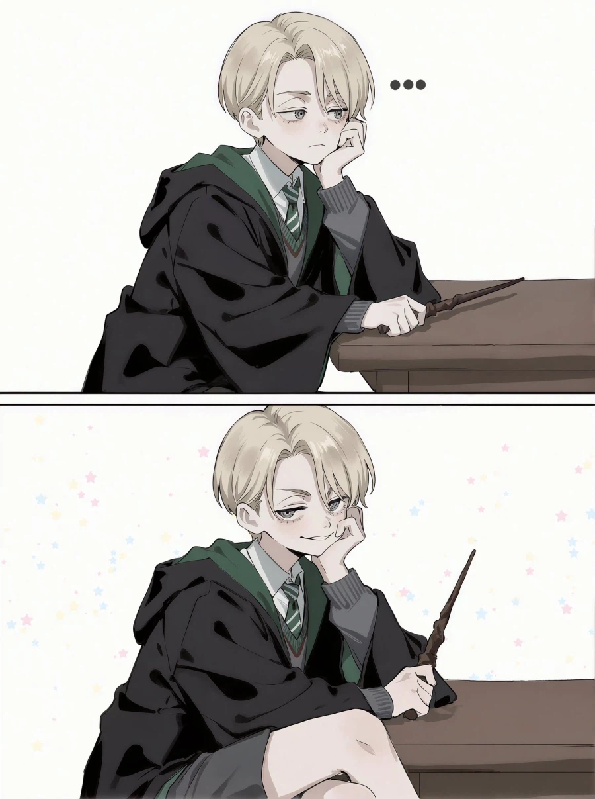

원본아니냐고? 좀 다름

원본아니냐고? 좀 다름
우린 그걸 "남자"라고 부르기로 했어요
하지만 암컷이죠?
펨보이랑 남자는 엄연히 다른 거거든요
전문용어로 “낭자애“ 라는게 있습니다
보추 말포이.... 이것도 좀 꼴리는 것 같은데...
아무래도 엔트로피 만큼 보추가 되는거지
남자인척하는 여자인척하는 남자인척하는 여자인척하는 남자인척하는 여자인척하는 남자인척하는 여자인척하는 게이
역TS
다금바리로 생선까스를 해먹네 믄디자슥아
존나맛있다아아아앗
슈레딩거 말포이 ㄷ
일루와잇
그러니까 해리포터가 명작인거지

오 뭔가 데미안같아
ts를 반복할수록 더 완벽한 암컷이 되는거임?
성반전의 성반전은 다르다. 이건 어드벤쳐 타임이 증명했다.
Tts
우린 그걸 말포이라고 부르기로 했어요
뭐야 이제는 소년이줄알았던 소꿉친구가 커보니 빵빵미소녀였다 전개라고?
흠...꼴릿
번역한거 그대로 다시 번역하니까 처음이랑 좀 달라지는 그런 기분이야